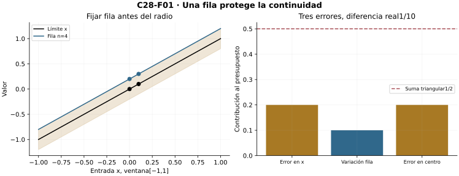
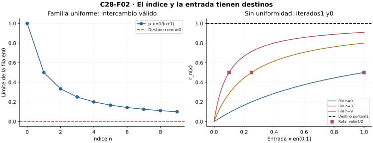
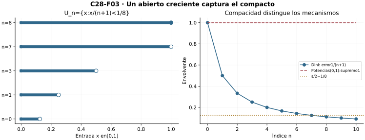
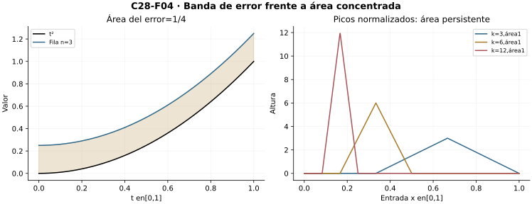
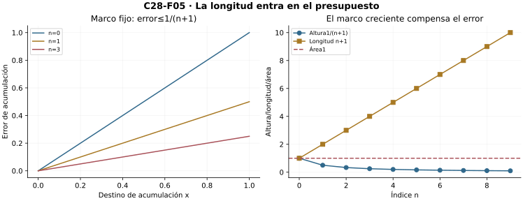
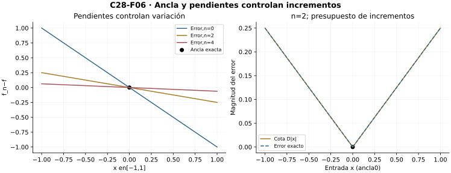
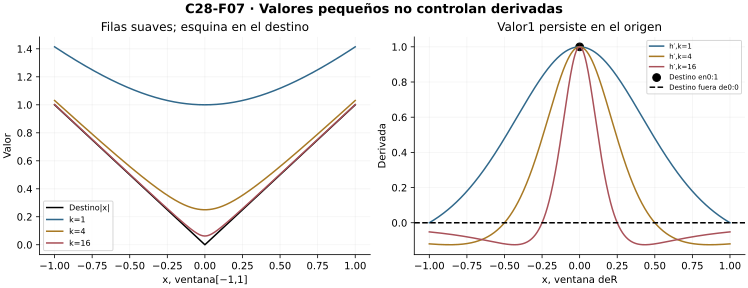
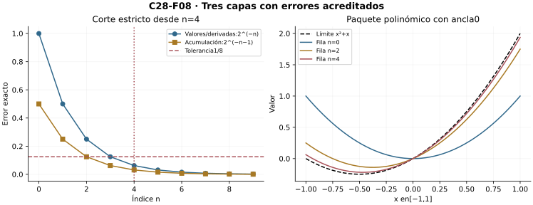

Capítulo 28 — Intercambiar límites con operaciones
Índice del libro · Ejercicios de este capítulo
C27 construyó el contrato uniforme. Ahora probaremos qué operaciones conserva, construyendo cada destino antes de identificarlo: continuidad, límites relativos, integrabilidad y derivabilidad. C14/C18/C23 son centrales; C10/C13/C16/C17/C19/C24 aportan interfaces declaradas. C29 sólo se anuncia al final.
28.1. Fijar una fila para conservar continuidad
C27 permite escoger una etapa antes de conocer la entrada. Ésa es la diferencia que faltaba en el argumento de continuidad de C26. Sean \(X\subseteq\mathbb R\), \(f_n:X\to\mathbb R\) y \(f_n\to f\) uniformemente. La continuidad se entiende relativamente a \(X\), también en sus bordes y puntos aislados.
R1 — Límite uniforme de continuas. Si las filas son continuas en un punto \(x_0\in X\), entonces \(f\) es continua allí. Para \(\varepsilon>0\), el contrato uniforme da un corte con error menor que \(\varepsilon/3\) en toda entrada y toda fila posterior. Fijamos una sola fila \(f_N\). Su continuidad en \(x_0\) entrega \(\delta>0\) para error menor que \(\varepsilon/3\). Si \(x\in X\) y \(|x-x_0|<\delta\),
\[|f(x)-f(x_0)|\le |f(x)-f_N(x)|+|f_N(x)-f_N(x_0)|+|f_N(x_0)-f(x_0)|<\varepsilon.\]
El radio se obtiene después de fijar la fila; no debe funcionar para todas las filas. Tampoco se necesita una cota global de sus valores. Basta que haya filas continuas en el punto con índices arbitrariamente grandes: para cada tolerancia escogemos una de ellas después del corte. Si todas son continuas en \(X\), la conclusión se aplica en todo \(X\). En el vacío no hay puntos que comprobar.
Continuidad uniforme es otra propiedad. Si las filas son uniformemente continuas en \(X\), la misma prueba usa el radio de una fila para todo par \(x,y\in X\). Así el límite es uniformemente continuo. No se exige de antemano un radio común a la familia de filas. Si sólo sabemos continuidad ordinaria de las filas, obtenemos continuidad ordinaria; en un compacto, C17 convierte después la del límite en uniforme.
Para \(f_n(x)=x+1/(n+1)\) en toda la recta, el error de aproximación es \(1/(n+1)\) y el límite es la identidad, uniformemente continua y no acotada. El control de errores no es una barrera de valores.
Una prueba que ahora sí funciona. Las potencias de C26 en \([0,1]\) son continuas, pero su límite vale cero antes de uno y uno en uno. R1 demuestra por contraposición que no pueden converger uniformemente. La conclusión concuerda con la envolvente uno de C27. En \([0,1)\) el límite es continuo y la convergencia sigue sin ser uniforme: continuidad del destino es una consecuencia suficiente, no una caracterización del modo de convergencia.

Microcontroles
Microcontrol 1
¿Qué se fija antes de obtener el radio de continuidad?
Ver solución del microcontrol 1
Una fila posterior al corte de error uniforme.
Microcontrol 2
¿Cuántos errores controla la prueba de R1?
Ver solución del microcontrol 2
Tres: aproximación en ambas entradas y variación de la fila fija.
Microcontrol 3
¿La fila fijada necesita una cota global de valores?
Ver solución del microcontrol 3
No; la prueba sólo usa error uniforme y continuidad.
Microcontrol 4
¿Los radios de continuidad deben ser comunes a todas las filas?
Ver solución del microcontrol 4
No; basta el radio de la fila escogida para la tolerancia dada.
Microcontrol 5
¿Qué hipótesis de filas conserva continuidad uniforme?
Ver solución del microcontrol 5
Continuidad uniforme de las filas, además de convergencia uniforme.
Microcontrol 6
¿Un destino continuo obliga convergencia uniforme?
Ver solución del microcontrol 6
No; las potencias en \([0,1)\) tienen destino cero y envolvente uno.
Microcontrol 7
¿Qué continuidad se usa en bordes del dominio?
Ver solución del microcontrol 7
Continuidad relativa al mismo dominio común.
Microcontrol 8
¿Qué ocurre en un dominio vacío?
Ver solución del microcontrol 8
La conclusión no tiene puntos que comprobar.
Ejercicios de la sección 28.1
Ejercicio 1. Una fila dentro de la banda
Prueba continuidad del límite uniforme en un punto donde todas las filas son continuas.
Ver solución del ejercicio 1
Fijamos \(\varepsilon>0\). Uniformidad da una fila \(f_N\) con error menor que \(\varepsilon/3\) en toda entrada. Continuidad de esa fila en \(x_0\) entrega un radio para \(|f_N(x)-f_N(x_0)|<\varepsilon/3\). La triangular entre \(f(x),f_N(x),f_N(x_0),f(x_0)\) suma tres errores menores que \(\varepsilon/3\). El mismo radio controla todas las entradas relativas próximas; no necesita controlar todas las filas.
Retorno visual. Véase C28-F01, después del argumento completo: la figura permite reconocer el mecanismo y no sustituye la prueba.
Ejercicio 2. Radios para todos los pares
Prueba que un límite uniforme de funciones uniformemente continuas es uniformemente continuo, sin radio común previo para las filas.
Ver solución del ejercicio 2
Escogemos una fila con error uniforme menor que \(\varepsilon/3\). La continuidad uniforme de esa fila produce un radio para todo par \(x,y\). Sumamos error de aproximación en \(x\), variación de la fila y error en \(y\). El resultado es menor que \(\varepsilon\) para todo par próximo. El radio depende de la tolerancia y de la fila fijada, que es suficiente.
Ejercicio 3. Destino continuo sin uniformidad
Explica por qué las potencias en \([0,1)\) refutan la recíproca del teorema de continuidad.
Ver solución del ejercicio 3
Para cada entrada \(x<1\), \(x^n\to0\), cuyo destino es continuo. Para cada \(n\ge1\), Bernoulli produce valores de \(x^n\) arbitrariamente próximos a uno desde abajo; su supremo es uno. Las envolventes no tienden a cero. Por tanto continuidad del destino no obliga uniformidad.
Ejercicio 4. Valores sin barrera global
Analiza continuidad y uniformidad de \(x+1/(n+1)\) en \(\mathbb R\).
Ver solución del ejercicio 4
La diferencia con la identidad es constante \(1/(n+1)\) y tiende a cero uniformemente. Todas las filas y el límite satisfacen \(|f(x)-f(y)|=|x-y|\), de modo que son uniformemente continuos. Sus valores son no acotados: para cualquier barrera se elige una entrada positiva suficientemente grande. R1 no necesita una barrera de valores.
Ejercicio 5. Filas continuas arbitrariamente tardías
Demuestra la versión de R1 que sólo exige filas continuas en \(x_0\) con índices arbitrariamente grandes.
Ver solución del ejercicio 5
Para la tolerancia \(\varepsilon/3\), el corte uniforme es \(N\). La hipótesis entrega un índice \(n\ge N\) de una fila continua en \(x_0\). Fijamos esa fila y su radio de continuidad. Los errores de aproximación en ambas entradas son menores que \(\varepsilon/3\) por pertenecer a la cola, y la variación central también. La triangular prueba continuidad del límite; no hay que construir una subsecuencia infinita.
28.2. Dos límites con un presupuesto común
Continuidad combina dos aproximaciones: avanzar el índice y acercar la entrada. Primero construiremos los destinos antes de intercambiar el orden.
R2 — Existencia e intercambio de límites. Sea \(a\) punto de acumulación de \(X\subseteq\mathbb R\). Supongamos \(f_n\to f\) uniformemente en \(X\) y que existen los límites relativos perforados
\[p_n=\lim_{\substack{x\to a\\x\in X}}f_n(x)\in\mathbb R.\]
Entonces existe \(p=\lim_n p_n\), existe el límite relativo de \(f\) en \(a\) y ambos son \(p\). El centro puede pertenecer o no a \(X\); su valor, si existe, no interviene en estos límites perforados.
Para construir \(p\), usamos Cauchy uniforme de C27. Dada \(\eta>0\), hay \(N\) con \(|f_n(x)-f_m(x)|<\eta/2\) para \(m,n\ge N\) y toda entrada. Fijamos esos dos índices y pasamos \(x\to a\). Álgebra del absoluto y orden de C13 dan
\[|p_n-p_m|\le\eta/2<\eta.\]
Hay entradas perforadas arbitrariamente cercanas porque \(a\in X'\); no hemos creado un límite vacío. C10 construye el único real \(p\) de esta sucesión de Cauchy.
Ahora, para \(\varepsilon>0\), elegimos una fila \(n\) suficientemente grande para que \(|f(x)-f_n(x)|<\varepsilon/3\) en todo \(X\) y \(|p_n-p|<\varepsilon/3\). Con ese índice fijo, el límite de la fila da un radio con \(|f_n(x)-p_n|<\varepsilon/3\) en la ventana perforada. Por triangular, \(|f(x)-p|<\varepsilon\). Se ha probado la existencia del límite de \(f\), además de la igualdad
\[\lim_{\substack{x\to a\\x\in X}}\lim_{n\to\infty}f_n(x)=\lim_{n\to\infty}\lim_{\substack{x\to a\\x\in X}}f_n(x).\]
Si desde el principio ya existe \(\lim_{x\to a}f(x)=p\), la prueba se abrevia pasando al límite la cota uniforme con margen \(\varepsilon/2\): \(|p_n-p|\le\varepsilon/2<\varepsilon\). Uniformidad sólo en una vecindad perforada fija también basta: restringimos el dominio antes de aplicar R2. Una vecindad dependiente del índice no aporta ese contrato común.
Ruta conjunta dada. Si \(x_n\in X\setminus\{a\}\) y \(x_n\to a\), el presupuesto
\[|f_n(x_n)-p|\le |f_n(x_n)-f(x_n)|+|f(x_n)-p|\]
da convergencia a \(p\). El corte uniforme controla el primer término y el límite recién construido controla el segundo. No se selecciona una ruta a partir de una negación.
Para \(f_n(x)=x+1/(n+1)\), \(a=0\), tenemos \(p_n=1/(n+1)\) y \(p=0\). En cambio, \(r_n(x)=(n+1)x/[1+(n+1)x]\) sobre \((0,1]\) tiene límite puntual uno, pero cada fila tiende a cero cuando \(x\downarrow0\). Los iterados son uno y cero; la ruta \(x_n=1/(n+1)\) vale \(1/2\). La falta de uniformidad explica la discrepancia, sin negar existencia de ambos iterados.

Microcontroles
Microcontrol 9
¿Por qué el centro de R2 debe acumular?
Ver solución del microcontrol 9
Para que las ventanas perforadas tengan entradas y los límites sean únicos.
Microcontrol 10
¿Qué se construye primero en R2?
Ver solución del microcontrol 10
El límite numérico de los destinos de las filas.
Microcontrol 11
¿Qué cota queda al pasar una entrada al límite?
Ver solución del microcontrol 11
Una cota débil, por ejemplo \(|p_n-p_m|\le\eta/2\).
Microcontrol 12
¿Qué construye el destino de una sucesión de Cauchy real?
Ver solución del microcontrol 12
La completitud numérica de C10.
Microcontrol 13
¿El valor de la función en el centro participa?
Ver solución del microcontrol 13
No en el límite relativo perforado.
Microcontrol 14
¿Basta uniformidad en una ventana fija?
Ver solución del microcontrol 14
Sí, tras restringir el dominio a esa ventana perforada.
Microcontrol 15
¿Qué valor conserva la ruta racional \(x_n=1/(n+1)\)?
Ver solución del microcontrol 15
\(1/2\) en toda etapa, frente a iterados uno y cero.
Microcontrol 16
¿Se escoge una ruta por cada escala en la prueba?
Ver solución del microcontrol 16
No; la prueba es por ventanas y las rutas usadas son dadas explícitamente.
Ejercicios de la sección 28.2
Ejercicio 6. Construir el destino de los destinos
Bajo R2, demuestra que los límites de fila \(p_n\) forman una sucesión de Cauchy.
Ver solución del ejercicio 6
Para \(\eta>0\), Cauchy uniforme de las filas da \(N\) con diferencias menores que \(\eta/2\) para toda entrada y todo par posterior. Fijamos \(m,n\ge N\) y pasamos la entrada al punto de acumulación. C13 conserva la cota débil: \(|p_n-p_m|\le\eta/2<\eta\). El mismo corte controla todos los pares. C10 entrega el único destino real \(p\).
Ejercicio 7. El límite que aún no existía
Completa la prueba de existencia de \(\lim_{x\to a}f(x)\) en R2.
Ver solución del ejercicio 7
Una vez construido \(p=\lim_n p_n\), fijamos una fila posterior tanto al corte uniforme para \(\varepsilon/3\) como al de \(|p_n-p|<\varepsilon/3\). Su límite relativo entrega un radio con \(|f_n(x)-p_n|<\varepsilon/3\) en la ventana perforada. La suma de esas tres diferencias prueba \(f(x)\to p\). El valor de \(f(a)\) no participa.
Ejercicio 8. Iterados diferentes
Calcula los dos iterados y la ruta \(x_n=1/(n+1)\) de \(r_n(x)=(n+1)x/[1+(n+1)x]\) en \((0,1]\).
Ver solución del ejercicio 8
Para una entrada positiva fija, el cociente tiende a uno, cuyo límite al acercarse a cero es uno. Para un índice fijo, el cociente tiende a cero cuando la entrada tiende a cero; el límite de esos destinos es cero. En la ruta indicada el numerador vale uno y el denominador dos, así el valor es \(1/2\) en todas las etapas. El error respecto del límite puntual es \(1/[1+(n+1)x]\), cuyo supremo es uno; no hay uniformidad.
Retorno visual. Véase C28-F02, después del argumento completo: la figura permite reconocer el mecanismo y no sustituye la prueba.
Ejercicio 9. Uniformidad en una ventana fija
Explica cómo R2 se aplica si sólo hay convergencia uniforme en \(X\cap\{0<|x-a|<r\}\) para un \(r>0\) fijo.
Ver solución del ejercicio 9
Restringimos todas las filas a ese dominio común. Sigue acumulando en \(a\), y los límites relativos originales se conservan por restricción a una ventana fija. Aplicamos R2 allí. El límite de \(f\) obtenido en la ventana es también su límite en \(X\) porque todo argumento suficientemente próximo y distinto del centro pertenece a ella. Ventanas distintas por índice no permiten esta reducción.
Ejercicio 10. Una ruta conjunta
Prueba \(f_n(x_n)\to p\) bajo R2 para cualquier ruta dada \(x_n\in X\setminus\{a\}\) con \(x_n\to a\).
Ver solución del ejercicio 10
La diferencia con \(p\) está bajo \(|f_n(x_n)-f(x_n)|+|f(x_n)-p|\). El primer término tiende a cero por el corte uniforme, independiente de la entrada elegida. El segundo lo hace por el límite relativo de \(f\) y la ruta perforada dada. Cortes para \(\varepsilon/2\) y su máximo completan el contrato. No se necesita seleccionar una ruta.
28.3. Compacidad y monotonía: el mecanismo de Dini
La continuidad del límite no caracteriza uniformidad, pero en presencia de compacidad y orden de las filas sí puede producirla.
R3 — Dini, con todas sus hipótesis. Sea \(K\subseteq\mathbb R\) compacto. Sean \(f_n\) continuas relativamente a \(K\), decrecientes por columnas y convergentes puntualmente a una función continua \(f\). Entonces \(f_n\to f\) uniformemente en \(K\). Para filas crecientes aplicamos el resultado a \(-f_n\).
El orden pasa al límite numérico, así \(e_n(x)=f_n(x)-f(x)\ge0\); además \(e_{n+1}\le e_n\) y \(e_n\to0\) puntualmente. Fijamos \(\varepsilon>0\) y definimos los abiertos relativos
\[U_n=\{x\in K:e_n(x)<\varepsilon/2\}.\]
Continuidad de \(f_n\) y \(f\) hace abiertos estos conjuntos. Son crecientes y cubren \(K\) por convergencia puntual. Para conectar con la definición de cubierta de C16, podemos usar todos los pares \((n,r)\) de bolas reales cuyo corte con \(K\) esté contenido en \(U_n\): esa familia abierta cubre \(K\) sin escoger un radio por cada punto. Compacidad entrega una subfamilia finita. Si \(K\ne\varnothing\), sus índices naturales tienen máximo \(N\) y todos sus cortes están en \(U_N\). Por tanto \(e_n(x)<\varepsilon/2<\varepsilon\) para todo \(x\in K\) y \(n\ge N\). Si \(K\) es vacío, el contrato es vacuo.
Dónde se gastó cada hipótesis. Puntualidad cubre; continuidad abre; compacidad reduce a finito; monotonía convierte los índices finitos en un corte para toda la cola. No se tomó un máximo de infinitos umbrales ni se supuso una tasa geométrica. El teorema es cualitativo: no entrega una fórmula universal para \(N(\varepsilon)\).
Para \(f_n(x)=x/(n+1)\) en \([0,1]\), las columnas decrecen a cero y la cota explícita \(1/(n+1)\) confirma el teorema. Las potencias en \([0,1]\) tienen destino discontinuo y conservan envolvente uno. En \((0,1)\) las mismas potencias tienen destino continuo, pero el dominio no es compacto y la envolvente sigue siendo uno.
Las indicadoras \(s_n=\mathbf1_{(0,1/(n+1))}\) sobre \([0,1]\) decrecen puntualmente a cero continuo y tienen envolvente uno: sus filas no son continuas. Las tiendas \(t_n\) de C26 son continuas en el compacto y tienden puntualmente a cero continuo, pero no tienen monotonía por columnas; su altura máxima uno persiste. Cada ejemplo elimina una hipótesis diferente.
Otro uso de finitud. Si una familia dada de abiertos cubre un compacto y la convergencia es uniforme en el corte del compacto con cada miembro, una subcubierta finita y C27 producen uniformidad en todo el compacto. «Uniforme cerca de cada punto» debe significar uniformidad en una vecindad fija del punto; continuidad local sola no lo dice. La cubierta se construye con todos los abiertos admisibles, sin elegir uno por punto.

Microcontroles
Microcontrol 17
¿Qué error es no negativo en Dini decreciente?
Ver solución del microcontrol 17
\(e_n=f_n-f\), por orden de cada columna al límite.
Microcontrol 18
¿Qué hace abiertos los conjuntos de error pequeño?
Ver solución del microcontrol 18
Continuidad de las filas y del destino.
Microcontrol 19
¿Qué permite obtener una subcubierta finita?
Ver solución del microcontrol 19
Compacidad del dominio.
Microcontrol 20
¿Qué convierte los índices finitos en una cola común?
Ver solución del microcontrol 20
Monotonía de los errores y el máximo finito de índices.
Microcontrol 21
¿Dini entrega una tasa numérica general?
Ver solución del microcontrol 21
No; garantiza un corte para cada tolerancia.
Microcontrol 22
¿Qué falta en las potencias sobre \((0,1)\)?
Ver solución del microcontrol 22
Compacidad, aunque el destino cero sea continuo.
Microcontrol 23
¿Qué falta en las indicadoras decrecientes del intervalo pequeño?
Ver solución del microcontrol 23
Continuidad de las filas.
Microcontrol 24
¿Qué falta en las tiendas continuas de altura uno?
Ver solución del microcontrol 24
Monotonía por columnas.
Ejercicios de la sección 28.3
Ejercicio 11. La cubierta creciente
Prueba Dini para filas continuas decrecientes hacia un límite continuo en un compacto.
Ver solución del ejercicio 11
El error \(e_n=f_n-f\) es no negativo por orden al límite y decrece a cero. Para \(\varepsilon>0\), los conjuntos relativos \(U_n=\{e_n<\varepsilon/2\}\) son abiertos crecientes y cubren el compacto. La familia de todas las bolas reales con cortes contenidos en algún \(U_n\) es una cubierta abierta dada. Una subcubierta finita entrega un máximo de índices \(N\); toda entrada está en \(U_N\) y sigue estando en \(U_n\) para \(n\ge N\). El error es menor que \(\varepsilon\). El vacío se trata vacuamente.
Retorno visual. Véase C28-F03, después del argumento completo: la figura permite reconocer el mecanismo y no sustituye la prueba.
Ejercicio 12. Sin compacidad
Usa potencias en \((0,1)\) para mostrar que no puede omitirse compacidad en Dini.
Ver solución del ejercicio 12
Las filas son continuas, decrecen por columnas y tienden puntualmente a cero continuo. El dominio abierto no es compacto. Para cada índice positivo la envolvente de \(x^n\) es uno, aunque no se alcanza. Así no hay convergencia uniforme. Las cubiertas crecientes de error pequeño no tienen un miembro que cubra toda la pieza.
Ejercicio 13. Sin continuidad de las filas
Analiza \(s_n=\mathbf1_{(0,1/(n+1))}\) en \([0,1]\).
Ver solución del ejercicio 13
Los soportes decrecen. En cero el valor es siempre cero; para cada entrada positiva la cola queda fuera del soporte. El límite es cero continuo. Cada fila toma el valor uno en \(x_n=1/[2(n+1)]\), por lo que su envolvente es uno. Las filas tienen discontinuidad en el origen y en el otro borde interior cuando éste existe. Falta continuidad de las filas, aun con compacidad y monotonía.
Ejercicio 14. Sin monotonía
Explica qué hipótesis de Dini falta para las tiendas de C26 en \([0,1]\).
Ver solución del ejercicio 14
Las tiendas con \(k=n+3\) son continuas, su soporte es \([1/k,3/k]\), y cada entrada positiva queda fuera de la cola; en cero siempre valen cero. El límite cero es continuo y el dominio compacto. Su máximo uno, alcanzado en \(2/k\), refuta uniformidad. Si fueran decrecientes por columnas, Dini la garantizaría; tampoco son crecientes, pues una columna creciente no negativa que termina en cero sería siempre cero. Falta monotonía de la familia.
Ejercicio 15. Pegar uniformidad local
Prueba que una cubierta abierta dada de un compacto, con convergencia uniforme en cada corte, permite uniformidad global.
Ver solución del ejercicio 15
Compacidad reduce la cubierta a una subfamilia finita. Para una tolerancia fija, cada una de esas piezas entrega un corte uniforme. Tomamos el máximo finito de los cortes. Toda entrada pertenece a una pieza escogida y cumple el error posterior común. Si el compacto es vacío, cualquier corte sirve. La prueba necesita vecindades fijas con uniformidad, no sólo continuidad puntual de filas.
28.4. La integral soporta un error global pequeño
La integral de Riemann requiere existencia, no sólo una notación bajo el signo de límite. Trabajaremos en un intervalo cerrado fijo \([a,b]\), con \(a<b\) y longitud \(\ell=b-a\).
R4 — Límite uniforme de integrables. Si cada \(f_n\) es integrable de Riemann en \([a,b]\) y \(f_n\to f\) uniformemente, entonces \(f\) es integrable y
\[\lim_n\int_a^b f_n(t)\,dt=\int_a^b f(t)\,dt.\]
Primero existe una barrera para \(f\): el corte uniforme para error uno entrega una fila acotada \(f_N\) y \(|f|\le |f_N|+1\). Por ello las imágenes locales no vacías tienen supremo e ínfimo reales. Para cualquier función acotada \(u\) con \(|f-u|\le\delta\) y cualquier partición \(P\), comparación de cotas en cada pieza da
\[U(f,P)\le U(u,P)+\delta\ell,\qquad L(f,P)\ge L(u,P)-\delta\ell.\]
En efecto, todo valor de \(f\) queda bajo la cota superior local de \(u\) más \(\delta\) y sobre su cota inferior menos \(\delta\). Pasar a extremos conserva desigualdades débiles; sumar anchuras produce exactamente \(\ell\). Así
\[G(f,P)\le G(u,P)+2\delta\ell.\]
Dada \(\varepsilon>0\), escogemos una fila con error menor que \(\delta=\varepsilon/[8(\ell+1)]\) y luego una partición de esa fila con brecha menor que \(\varepsilon/2\). La brecha de \(f\) resulta menor que \(\varepsilon/2+\varepsilon/4<\varepsilon\). El criterio de Darboux de C23 prueba integrabilidad antes de comparar valores integrales.
Ahora \(f_n-f\) y su valor absoluto son integrables por C23. Para toda envolvente real \(E_n=\sup_{[a,b]}|f_n-f|\) de la cola,
\[\left|\int_a^b f_n-\int_a^b f\right|\le\int_a^b|f_n-f|\le\ell E_n.\]
Como \(E_n\to0\), el límite sigue. La desigualdad es también un certificado de error para una etapa concreta; no se necesita que el máximo se alcance. Para \(a=b\), las integrales son cero por convención y no se divide por una longitud nula. Orientar al revés cambia el signo de ambos valores, conservando la cota absoluta con \(|b-a|\).
Para \(f_n(t)=t^2+1/(n+1)\) en \([0,1]\), la integral es \(1/3+1/(n+1)\) y el error es exactamente \(E_n=1/(n+1)\). La cota de longitud es óptima para errores constantes de un signo.
Puntualidad no basta. Las tiendas normalizadas \(b_n=(n+3)t_n\) de C26 son continuas e integrables, tienden puntualmente a cero y tienen integral uno. Ambas integrales comparadas existen y difieren. Las indicadoras finitas de racionales de C25 tienden a Dirichlet, que ni siquiera es integrable: allí la comparación final no está definida. Las dos fallas son distintas.

Microcontroles
Microcontrol 25
¿Qué debe probarse antes de escribir la integral del destino?
Ver solución del microcontrol 25
Acotación e integrabilidad del destino.
Microcontrol 26
¿Cómo cambia la brecha Darboux con error global \(\delta\)?
Ver solución del microcontrol 26
Aumenta a lo sumo \(2\delta(b-a)\).
Microcontrol 27
¿Por qué aparecen dos contribuciones de error en la brecha?
Ver solución del microcontrol 27
Una en la suma superior y otra en la inferior.
Microcontrol 28
¿Qué error controla el valor integral?
Ver solución del microcontrol 28
La longitud del segmento multiplicada por la envolvente de error.
Microcontrol 29
¿Debe alcanzarse la envolvente para integrar su cota?
Ver solución del microcontrol 29
No; basta que sea una cota real para todos los valores.
Microcontrol 30
¿Cómo se trata un segmento de longitud cero?
Ver solución del microcontrol 30
La integral es cero por convención, sin dividir por la longitud.
Microcontrol 31
¿Qué conserva la integral de las tiendas normalizadas?
Ver solución del microcontrol 31
Uno en cada etapa, frente a integral cero del destino.
Microcontrol 32
¿Qué falla para el destino Dirichlet?
Ver solución del microcontrol 32
La integral del destino no existe en Riemann.
Ejercicios de la sección 28.4
Ejercicio 16. Existencia antes de integrar
Prueba integrabilidad del límite uniforme de funciones integrables mediante brechas de Darboux.
Ver solución del ejercicio 16
La uniformidad con tolerancia uno y una fila acotada acotan el límite. Si \(|f-f_n|\le\delta\), extremos locales y suma de anchuras dan \(G(f,P)\le G(f_n,P)+2\delta\ell\). Para \(\varepsilon>0\) escogemos una fila con error menor que \(\varepsilon/[8(\ell+1)]\) y una partición de esa fila con brecha menor que \(\varepsilon/2\). La brecha de \(f\) es menor que \(3\varepsilon/4\). C23 acredita su integrabilidad. Para longitud cero la integral es cero por convención.
Ejercicio 17. Error del valor integral
Obtén una cota del error de integrales en un segmento de longitud \(\ell\) con envolvente \(E_n\).
Ver solución del ejercicio 17
La integrabilidad de ambos términos acredita la diferencia y su absoluto. Linealidad, triangular integral y orden dan \(|I_n-I|\le\int|f_n-f|\le\ell E_n\). El supremo es real en la cola y no necesita alcanzarse. Como \(E_n\to0\), también lo hace este error.
Ejercicio 18. La cota se alcanza
Calcula integral y error de \(f_n(t)=t^2+1/(n+1)\) en \([0,1]\).
Ver solución del ejercicio 18
C23/C24 dan \(I_n=1/3+1/(n+1)\) y \(I=1/3\). La envolvente es \(E_n=1/(n+1)\) y la longitud es uno. El error integral es exactamente \(E_n\), mostrando optimalidad de la cota general para perturbaciones constantes positivas.
Ejercicio 19. Destinos existentes pero distintos
Usa las tiendas normalizadas para refutar intercambio integral bajo convergencia sólo puntual.
Ver solución del ejercicio 19
La tienda de altura uno y base de anchura \(2/k\) tiene área \(1/k\), con \(k=n+3\). Multiplicarla por \(k\) deja límite puntual cero y hace integral uno en cada etapa. La integral del destino es cero. Ambas existen y el límite de los valores integrales es uno, distinto de cero. No hay uniformidad: la altura de las filas normalizadas es \(k\).
Retorno visual. Véase C28-F04, después del argumento completo: la figura permite reconocer el mecanismo y no sustituye la prueba.
Ejercicio 20. Un destino no integrable
Distingue la falla integral de los indicadores finitos de racionales de C25 de la anterior.
Ver solución del ejercicio 20
Cada indicador de un conjunto finito de racionales integra cero. La sucesión que añade racionales de una enumeración tiende puntualmente a Dirichlet: uno en racionales y cero en irracionales. Cada pieza de longitud positiva tiene oscilación uno, de modo que ninguna partición da brecha menor que la longitud total. El destino no es integrable; la integral final está indefinida. Esto difiere de dos integrales existentes con valores distintos.
28.5. Acumulaciones, pesos y extremos variables
El presupuesto de R4 controla más que una integral final. Sea \(c\in[a,b]\) fijo y definamos, por restricción y orientación de C23,
\[A_n(x)=\int_c^x f_n(t)\,dt,\qquad A(x)=\int_c^x f(t)\,dt.\]
R5 — Acumulaciones uniformes. Bajo R4, para todo \(x\in[a,b]\),
\[|A_n(x)-A(x)|\le |x-c|E_n\le\ell E_n.\]
Si \(x<c\), invertimos los límites de integración antes de aplicar orden; si \(x=c\), ambos lados son cero. El mismo corte controla todos los destinos de acumulación. No es una familia infinita de cortes escogidos por separado.
Si todas las integrandas son continuas, R1 prueba continuidad de \(f\). C24 entrega \(A_n'=f_n\) y \(A'=f\) en \((a,b)\), con derivadas relativas de un lado en los extremos cuando corresponda. Así se conservan simultáneamente acumulación y tasa. Para integrandas sólo integrables, \(A\) sigue existiendo y siendo continua por C24, pero no se identifica su derivada con \(f\) en un punto discontinuo sin hipótesis adicional.
Peso fijo. Si \(w\) es integrable y \(|w|\le M\), el producto \(wf_n\) y \(wf\) es integrable por C23 y
\[\left|\int_a^b w(t)(f_n(t)-f(t))\,dt\right|\le M\ell E_n.\]
Se puede mejorar a \(E_n\int_a^b|w|\). Existencia de los productos y del absoluto precede a esta estimación. No se está multiplicando las integrales de los factores.
Extremos móviles dentro de un marco fijo. Sean \(u_n,v_n,u,v\in[a,b]\), \(u_n\to u\), \(v_n\to v\). Si \(|f|\le B\), la aditividad orientada da
\[\left|\int_{u_n}^{v_n}f_n-\int_u^v f\right|\le\ell E_n+B|u_n-u|+B|v_n-v|.\]
Primero cambiamos \(f_n\) por \(f\) manteniendo extremos; luego movemos los extremos de la integral de \(f\). La cota es válida si están invertidos o coinciden. Tres errores tendentes a cero permiten el límite, porque todos los intervalos viven en el mismo marco finito.
Para \(f_n(t)=t^2+1/(n+1)\), \(c=0\), \(A_n(x)=x^3/3+x/(n+1)\). El error de acumulación es \(|x|/(n+1)\); en \([0,1]\) su envolvente es \(1/(n+1)\). Si el peso es \(w(t)=t\), el error integral final es \(1/[2(n+1)]\).
La longitud también es una hipótesis. Las funciones constantes \(1/(n+1)\) convergen uniformemente a cero en toda la recta. Sin embargo, su integral en \([0,n+1]\) vale uno. Los intervalos crecen y no hay una longitud fija que multiplique un error tendente a cero. No se ha definido ni utilizado aquí una integral impropia: cada etapa es una integral propia finita. Uniformidad es suficiente en el marco fijo, pero no necesaria para igualdad de un par de límites integrales: las tiendas sin normalizar tienen integral \(1/(n+3)\to0\) sin converger uniformemente.

Microcontroles
Microcontrol 33
¿Qué corte controla todas las acumulaciones?
Ver solución del microcontrol 33
El corte uniforme de integrandas y una longitud común finita.
Microcontrol 34
¿Qué se hace si el destino de acumulación precede al anclaje?
Ver solución del microcontrol 34
Se orienta la integral invirtiendo sus límites.
Microcontrol 35
¿Qué hipótesis permite identificar la derivada de toda acumulación?
Ver solución del microcontrol 35
Continuidad de la integranda en el centro pertinente.
Microcontrol 36
¿Qué debe acreditarse para un peso integrable fijo?
Ver solución del microcontrol 36
Integrabilidad de productos y una barrera o integral del absoluto del peso.
Microcontrol 37
¿Cuántos errores hay al mover ambos extremos?
Ver solución del microcontrol 37
Tres: integranda, extremo inicial y extremo final.
Microcontrol 38
¿Dónde deben permanecer los extremos móviles?
Ver solución del microcontrol 38
En un mismo segmento cerrado de longitud finita.
Microcontrol 39
¿Cuánto integra \(1/(n+1)\) sobre \([0,n+1]\)?
Ver solución del microcontrol 39
Uno; la longitud compensa el error pequeño.
Microcontrol 40
¿Uniformidad es necesaria para igualdad de límites integrales?
Ver solución del microcontrol 40
No; las tiendas sin normalizar integran \(1/(n+3)\to0\).
Ejercicios de la sección 28.5
Ejercicio 21. Todas las acumulaciones
Prueba uniformidad de \(A_n(x)=\int_c^x f_n\) hacia \(A(x)=\int_c^x f\) bajo R4.
Ver solución del ejercicio 21
Restricción e integración orientada permiten cada acumulación. En el segmento entre \(c\) y \(x\), el error está bajo \(|x-c|E_n\le\ell E_n\). Para \(x=c\) vale cero y para \(x<c\) se invierte el signo antes de aplicar orden. La cota global tendente a cero prueba uniformidad para todos los destinos \(x\).
Ejercicio 22. Peso integrable
Para un peso fijo integrable \(w\), obtiene el error ponderado usando \(\int|w|\).
Ver solución del ejercicio 22
C23 acredita productos, diferencias y absolutos. La desigualdad puntual \(|w(f_n-f)|\le E_n|w|\) se integra por orden, dando error a lo sumo \(E_n\int|w|\). La integral de \(|w|\) es finita en el marco cerrado; su producto por \(E_n\) tiende a cero. Si \(|w|\le M\), se obtiene la cota menos fina \(M\ell E_n\).
Ejercicio 23. Mover los extremos
Demuestra la estimación de R5 para \(u_n,v_n\to u,v\) dentro de \([a,b]\).
Ver solución del ejercicio 23
Insertamos la integral de \(f\) con extremos \(u_n,v_n\). El cambio de integranda cuesta a lo sumo \(|v_n-u_n|E_n\le\ell E_n\). La aditividad orientada expresa los cambios de extremos como dos integrales de \(f\); si \(|f|\le B\), cuestan a lo sumo \(B|u_n-u|\) y \(B|v_n-v|\). Triangular suma los tres términos y todos tienden a cero. Inversiones e igualdad de extremos están cubiertas por orientación.
Ejercicio 24. El marco que crece
Explica por qué \(f_n=1/(n+1)\) en \(\mathbb R\) puede tener integral uno en \([0,n+1]\) pese a convergencia uniforme a cero.
Ver solución del ejercicio 24
El error uniforme es \(1/(n+1)\) y la longitud de la etapa es \(n+1\). Su producto es uno, que es exactamente la integral. No hay un marco de longitud fija ni extremos con destinos finitos dentro de él. Cada integral es propia y finita; el ejemplo no necesita integrales impropias.
Retorno visual. Véase C28-F05, después del argumento completo: la figura permite reconocer el mecanismo y no sustituye la prueba.
Ejercicio 25. Continuidad de la acumulada y derivada
¿Qué cambia al acumular integrandas continuas frente a integrandas sólo integrables?
Ver solución del ejercicio 25
Ambos casos dan acumulaciones existentes, continuas y convergentes uniformemente por R5/C24. Si las integrandas son continuas, R1 hace continuo al destino y C24 identifica la derivada de su acumulada con él en todo punto interior. Para una integranda sólo integrable, esa identificación exige continuidad en el punto: un valor aislado puede cambiar la integranda sin cambiar la acumulada, y un salto puede impedir derivabilidad.
28.6. Derivadas uniformes y un valor de anclaje
La derivada divide incrementos por distancias pequeñas. Un error de valores uniformemente pequeño puede amplificarse sin límite tras esa división. El control adecuado actúa sobre las derivadas.
R6 — Teorema de convergencia de derivadas. Sean \(a<b\), \(f_n\) continuas en \([a,b]\) y derivables en \((a,b)\). Supongamos que \(g_n=f_n'\) converge uniformemente a \(g\) en \((a,b)\) y que, para un \(c\in[a,b]\), \(f_n(c)\to\lambda\). Entonces existe \(f\) con \(f_n\to f\) uniformemente en \([a,b]\), \(f(c)=\lambda\) y \(f'=g\) en \((a,b)\). No se supone continuidad de las derivadas.
Construir los valores. C27 da Cauchy uniforme para \(g_n\). Para \(m,n\) posteriores a un corte y \(x\in[a,b]\), aplicamos C19 a \(f_n-f_m\) en el segmento completo entre \(c\) y \(x\). Su continuidad en los extremos y derivabilidad interior están acreditadas. Si la diferencia de derivadas es menor que \(\eta\) en todo \((a,b)\),
\[|f_n(x)-f_m(x)|\le |f_n(c)-f_m(c)|+\eta|x-c|.\]
El caso \(x=c\) es directo. Dada \(\varepsilon>0\), pedimos al anclaje error menor que \(\varepsilon/2\) y a las derivadas menor que \(\varepsilon/[2(\ell+1)]\), \(\ell=b-a\). El máximo de ambos cortes prueba Cauchy uniforme de las filas. C27 construye el único \(f\); R1 da continuidad en el cerrado y puntualidad identifica \(f(c)=\lambda\).
Controlar incrementos antes de dividir. Sean \(E_n=\sup_{(a,b)}|g_n-g|\) las envolventes reales de la cola. Para \(x,y\in[a,b]\), C19 aplicado a \(f_m-f_n\) y la cota \(E_m+E_n\) dan
\[|(f_m-f_n)(y)-(f_m-f_n)(x)|\le(E_m+E_n)|y-x|.\]
Fijamos \(n,x,y\) y pasamos \(m\to\infty\). C10/C13 conservan orden y C27 da \(E_m\to0\), por lo que
\[|(f-f_n)(y)-(f-f_n)(x)|\le E_n|y-x|.\]
No se afirmó que \(f\) ya fuera derivable. Esta desigualdad de incrementos se obtiene antes de cualquier cociente nuevo.
Identificar la derivada. Fijamos \(x_0\in(a,b)\) y \(\varepsilon>0\). Elegimos una fila \(n\) con \(E_n<\varepsilon/3\). Para cualquier \(x\ne x_0\) admisible, la desigualdad anterior controla en \(E_n\) la diferencia de cocientes de \(f\) y \(f_n\). La derivabilidad de esa fila fija aporta un radio para el segundo error. Finalmente,
\[\left|\frac{f(x)-f(x_0)}{x-x_0}-g(x_0)\right|\le E_n+\left|\frac{f_n(x)-f_n(x_0)}{x-x_0}-g_n(x_0)\right|+|g_n(x_0)-g(x_0)|<\varepsilon.\]
La tercera magnitud es a lo sumo \(E_n\). Se ha demostrado \(f'(x_0)=g(x_0)\) por definición, sin exigir una primitiva integral de una derivada discontinua.
La misma cota de incrementos, con \(x=c\), entrega el certificado
\[|f_n(x)-f(x)|\le |f_n(c)-\lambda|+|x-c|E_n.\]
En un intervalo abierto arbitrario el argumento se aplica a cada segmento cerrado contenido en él y que una el anclaje con la entrada. Produce un límite puntual y uniformidad en cada segmento acotado apropiado; en un intervalo no acotado no garantiza uniformidad global de valores. Para dominios desconectados, hace falta un anclaje por componente que se quiera construir; un valor no fija constantes en otra componente.

Microcontroles
Microcontrol 41
¿Qué dato fija la constante aditiva en R6?
Ver solución del microcontrol 41
Convergencia de valores en un anclaje.
Microcontrol 42
¿En qué dominio se controlan uniformemente las derivadas?
Ver solución del microcontrol 42
En el interior del mismo segmento.
Microcontrol 43
¿Qué herramienta convierte derivadas en cotas de incrementos?
Ver solución del microcontrol 43
Valor medio y su consecuencia de C19.
Microcontrol 44
¿Qué se fija antes de pasar una etapa al límite en incrementos?
Ver solución del microcontrol 44
La fila comparada y las dos entradas.
Microcontrol 45
¿Se supone derivabilidad del destino para obtener esa cota?
Ver solución del microcontrol 45
No; se deduce después mediante cocientes.
Microcontrol 46
¿Cómo se divide la cota de incrementos?
Ver solución del microcontrol 46
Por la distancia positiva entre entradas distintas.
Microcontrol 47
¿R6 necesita derivadas continuas?
Ver solución del microcontrol 47
No, sólo derivabilidad de filas y convergencia uniforme de sus derivadas.
Microcontrol 48
¿Qué factor limita la uniformidad de valores en dominios no acotados?
Ver solución del microcontrol 48
La distancia al anclaje, que puede carecer de barrera global.
Ejercicios de la sección 28.6
Ejercicio 26. La ancla y todos los valores
Prueba Cauchy uniforme de las filas bajo R6.
Ver solución del ejercicio 26
Cauchy del anclaje controla \(|f_n(c)-f_m(c)|<\varepsilon/2\). Cauchy uniforme de derivadas entrega una cola con diferencia menor que \(\varepsilon/[2(\ell+1)]\). C19 aplicado a \(f_n-f_m\) entre \(c\) y cualquier entrada da error a lo sumo el de anclaje más la cota de derivadas por \(|x-c|\le\ell\). El máximo de ambos cortes sirve para todos los pares y entradas; C27 construye el límite uniforme.
Ejercicio 27. El error de incrementos
Demuestra \(|(f-f_n)(y)-(f-f_n)(x)|\le E_n|y-x|\) sin suponer derivabilidad previa de \(f\).
Ver solución del ejercicio 27
Para índices en la cola, la diferencia de derivadas \(g_m-g_n\) está bajo \(E_m+E_n\). C19 da la misma constante multiplicando \(|y-x|\) para los incrementos de \(f_m-f_n\). Fijamos \(n,x,y\) y pasamos \(m\) al límite. Los valores de \(f_m\) convergen, \(E_m\to0\), y orden conserva la desigualdad débil. Así se obtiene la cota pedida antes de derivar el destino.
Ejercicio 28. Tres errores de cocientes
Completa la identificación \(f^{\prime}=g\) de R6 a partir de la cota de incrementos.
Ver solución del ejercicio 28
En un centro interior fijo, escogemos una fila con \(E_n<\varepsilon/3\). Dividir la cota de incrementos por la distancia no nula da error entre cocientes a lo sumo \(E_n\). Derivabilidad de la fila fija da un radio para acercar su cociente a \(g_n(x_0)\) con error menor que \(\varepsilon/3\). La diferencia entre \(g_n(x_0)\) y \(g(x_0)\) es a lo sumo \(E_n\). Triangular deja error menor que \(\varepsilon\). Se restringe además el radio para permanecer dentro del segmento.
Ejercicio 29. Certificado de valores desde derivadas
Obtén una cota de aproximación de valores usando la ancla y \(E_n\) en R6.
Ver solución del ejercicio 29
En la cota de incrementos tomamos una entrada igual a \(c\). La diferencia restante del error en \(c\) es \(f(c)-f_n(c)=\lambda-f_n(c)\). Triangular da \(|f_n(x)-f(x)|\le |f_n(c)-\lambda|+|x-c|E_n\). Para una cota uniforme se reemplaza la distancia por \(\ell\). Ambos términos tienden a cero; el segundo controla variaciones y el primero la constante aditiva.
Ejercicio 30. Derivadas sin continuidad
Explica por qué R6 no necesita continuidad de \(g_n\) ni de \(g\).
Ver solución del ejercicio 30
C19 sólo exige continuidad de \(f_n-f_m\) en cada segmento y derivabilidad en su interior; no exige continuidad de la derivada. Las cotas de diferencias de derivadas permiten estimar incrementos. La identificación final usa derivabilidad de una fila y el presupuesto de incrementos, sin integrar \(g\) ni aplicar el teorema fundamental a una función posiblemente discontinua. Si se añaden derivadas continuas, R1 sí conserva esa continuidad como conclusión adicional.
28.7. Lo que la convergencia de valores no controla
La uniformidad de valores conserva continuidad, pero no derivabilidad. Tampoco basta saber que existen las derivadas puntuales de las filas y que éstas tienen un límite puntual.
R7 — Tres pruebas de frontera. Sea \(k=n+1\) y
\[q_n(x)=\sqrt{x^2+k^{-2}}\quad(x\in\mathbb R).\]
Las herramientas de raíces y cadena de C10/C18 dan \(q_n'=x/\sqrt{x^2+k^{-2}}\). Puesto que \(|x|\le q_n(x)\le |x|+1/k\), se tiene \(\sup_{\mathbb R}|q_n-|x||=1/k\), alcanzado en cero. La segunda desigualdad sigue al cuadrar dos cantidades no negativas. El límite \(|x|\) es continuo y no derivable en cero: los cocientes laterales son menos uno y uno. Cada fila sí es derivable allí, con derivada cero. Las derivadas convergen puntualmente a la función signo, con valor cero en el origen, que es discontinua. R1 refuta su convergencia uniforme, pues las derivadas de las filas son continuas.
Ahora recuperamos
\[h_n(x)=\frac{x}{1+kx^2},\qquad h_n'(x)=\frac{1-kx^2}{(1+kx^2)^2}.\]
C27 da convergencia uniforme de valores a cero con envolvente \(1/(2\sqrt k)\). En cero las derivadas valen uno; para \(x\ne0\) tienden a cero. Para comprobarlo basta dividir numerador y denominador por \(k^2x^4\), que es no nulo, o acotar con \(1/(kx^2)+1/(k^2x^4)\). El límite puntual de derivadas es la indicadora de cero, distinta de la derivada cero del límite de valores. La igualdad deseada falla en un punto donde ambos destinos de derivadas existen. No es sólo una falta de existencia.
El anclaje no es decorativo. Las funciones constantes \(f_n=n\) tienen derivadas idénticamente cero y no convergen en ningún punto. Las constantes \((-1)^n\) tampoco convergen, aunque sus derivadas sí. En \([0,1]\cup[2,3]\) podemos fijar todas las filas en cero en la primera componente y en \(n\) en la segunda; una ancla en la primera no controla la segunda. No hay segmento del dominio atravesando el hueco al que aplicar C19.
Un control local no es global. Para \(f_n(x)=x/(n+1)\) en \(\mathbb R\), las derivadas convergen uniformemente a cero y \(f_n(0)=0\). Los valores convergen uniformemente en cada segmento acotado, pero no en toda la recta: en \(x=n+1\) el error es uno. El factor \(|x-c|\) de R6 no tiene barrera global.
La operación de derivar no es continua respecto de la sola norma de valores: \(h_n\) es una sucesión de errores pequeños cuyas derivadas no se acercan uniformemente a cero. La integral en un marco fijo sí tiene la cota de R4. Los operadores requieren presupuestos diferentes; no basta que sus fórmulas se parezcan a un paso al límite.

Microcontroles
Microcontrol 49
¿Qué envolvente tienen las raíces suavizadas frente a \(|x|\)?
Ver solución del microcontrol 49
\(1/(n+1)\), alcanzada en cero.
Microcontrol 50
¿Por qué \(|x|\) no deriva en cero?
Ver solución del microcontrol 50
Sus cocientes laterales son menos uno y uno.
Microcontrol 51
¿Qué valor tienen \(h_n^{\prime}\) en cero?
Ver solución del microcontrol 51
Uno en todas las etapas.
Microcontrol 52
¿Qué derivada tiene el destino cero de \(h_n\)?
Ver solución del microcontrol 52
Cero en todos los centros.
Microcontrol 53
¿Qué no detecta la operación de derivar?
Ver solución del microcontrol 53
Las constantes aditivas de cada componente.
Microcontrol 54
¿Una ancla controla otra componente separada?
Ver solución del microcontrol 54
No; falta un segmento del dominio que las una.
Microcontrol 55
¿Dónde convergen uniformemente los valores \(x/(n+1)\)?
Ver solución del microcontrol 55
En cada segmento acotado, aunque no en toda la recta.
Microcontrol 56
¿La sola norma de valores controla la derivada?
Ver solución del microcontrol 56
No; \(h_n\) tiende uniformemente a cero y sus derivadas no.
Ejercicios de la sección 28.7
Ejercicio 31. Una esquina como límite uniforme
Prueba convergencia uniforme de \(q_n(x)=\sqrt{x^2+(n+1)^{-2}}\) a \(|x|\) en \(\mathbb R\) y describe su derivabilidad.
Ver solución del ejercicio 31
La raíz es al menos \(|x|\). El cuadrado de \(|x|+1/k\) es al menos \(x^2+k^{-2}\), con \(k=n+1\), y ambos lados son no negativos. Así el error está entre cero y \(1/k\), con igualdad en cero. Cada fila deriva a \(x/\sqrt{x^2+k^{-2}}\). El destino tiene cocientes laterales menos uno y uno en cero, por lo que no es derivable allí. Uniformidad de valores no conserva derivabilidad.
Ejercicio 32. Los dos destinos de derivadas existen
Para \(h_n=x/(1+(n+1)x^2)\), compara \(\lim_n h_n^{\prime}\) con la derivada de \(\lim_n h_n\).
Ver solución del ejercicio 32
La envolvente de valores es \(1/[2\sqrt{n+1}]\), de modo que el destino es cero uniforme. La regla de cociente da \(h_n^{\prime}=(1-kx^2)/(1+kx^2)^2\). En cero vale uno; para cada entrada no nula tiende a cero por división por \(k^2x^4\). Su límite puntual es la indicadora de cero. La derivada del destino es cero en toda la recta, así los valores discrepan en cero. Las derivadas no convergen uniformemente, pues son continuas y su destino no lo es.
Retorno visual. Véase C28-F06, después del argumento completo: la figura permite reconocer el mecanismo y no sustituye la prueba.
Ejercicio 33. Sin anclaje
Construye dos familias con derivadas uniformemente cero y sin convergencia de valores.
Ver solución del ejercicio 33
Las constantes \(f_n=n\) tienen derivadas cero y valores que divergen en cada entrada. Las constantes \(f_n=(-1)^n\) también tienen derivadas cero y valores alternantes sin límite. Ninguna cumple convergencia en un anclaje. La derivada no detecta la constante aditiva, que R6 debe fijar por otro dato.
Ejercicio 34. Sólo uniformidad en segmentos
Analiza R6 para \(f_n=x/(n+1)\) en toda la recta con anclaje cero.
Ver solución del ejercicio 34
Las derivadas constantes \(1/(n+1)\) convergen uniformemente a cero y el anclaje es siempre cero. En \([-M,M]\) el error de valores tiene envolvente \(M/(n+1)\), tendente a cero. En toda la recta cada etapa tiene errores no acotados y en la entrada \(n+1\) vale uno. No hay uniformidad global. La cota de R6 contiene la distancia al anclaje, que está acotada sólo en un marco finito.
Ejercicio 35. Una ancla por componente
Construye un ejemplo en \([0,1]\cup[2,3]\) donde la ancla en la primera pieza no controle la segunda.
Ver solución del ejercicio 35
Tomamos \(f_n=0\) en la primera pieza y \(f_n=n\) en la segunda. Cada restricción es constante y continua, con derivada interior cero. Las derivadas convergen uniformemente a cero en los interiores y \(f_n(0)=0\). En la segunda pieza los valores divergen. El segmento entre una entrada de cada pieza atraviesa el hueco y no pertenece al dominio; C19 no puede unirlas.
28.8. Certificar varias operaciones a la vez
Los teoremas anteriores permiten convertir una aproximación en una cadena de certificados, indicando para cada operación su dominio, existencia y cota.
R8 — Un paquete explícito. En \([-1,1]\), sean
\[f_n(x)=x^2+(1-2^{-n})x,\quad f(x)=x^2+x,\quad g_n(x)=2x+1-2^{-n},\quad g(x)=2x+1.\]
Todas las filas son polinomios, \(f_n(0)=0\), y las diferencias de derivadas tienen envolvente \(D_n=2^{-n}\). R6 construye e identifica el límite con derivada \(g\); la cota de anclaje da \(|f_n(x)-f(x)|\le |x|D_n\). La igualdad directa muestra \(E_n=D_n\), alcanzada en los extremos. R1 conserva continuidad y R4 permite integrar. En todo el intervalo final \([-1,1]\), el error integral firmado es cero porque la diferencia es impar; la cota general \(2E_n\) sigue siendo válida, aunque no sea exacta en ese caso.
Con anclaje de acumulación en cero, C24 da
\[A_n(x)=x^3/3+(1-2^{-n})x^2/2,\qquad A(x)=x^3/3+x^2/2.\]
Por ello \(\sup|A_n-A|=D_n/2\). Se conocen simultáneamente valores, pendientes, acumulaciones y sus tasas. Un certificado para error de derivadas menor que \(\varepsilon\) exige \(2^{-n}<\varepsilon\), con desigualdad estricta: si \(\varepsilon=1/8\), desde \(n=4\) sirve, pero \(n=3\) está en la frontera. No se deduce una identidad de integrales de una gráfica.
Norma con dos capas. Para funciones \(u\) continuas en \([a,b]\) con derivada interior que admita extensión continua al cerrado, llamamos \(C^1([a,b])\) a esta clase y definimos
\[\|u\|_{C^1}=\sup_{[a,b]}|u|+\sup_{[a,b]}|u'|.\]
Los extremos de \(u'\) son los valores de la extensión continua; coinciden con derivadas de un lado por C19 y paso al límite. Sus imágenes son acotadas por C16. Las propiedades de norma siguen aplicando las de C27 a las dos capas; identidad usa ya la capa de valores. Si \(u_n\to u\) en esta norma, convergen uniformemente valores y derivadas. A la inversa, si una sucesión de \(C^1\) tiene derivadas uniformes en el cerrado y valores convergentes en un anclaje, R1 hace continuo al límite de derivadas, R6 construye \(u\) y prueba convergencia en ambas capas. El límite de derivadas en los bordes es su extensión continua; la misma cota de incrementos identifica las derivadas laterales.
Un número finito de derivadas. Para \(r\ge1\) fijo, supongamos filas \(C^r\) en un mismo segmento, convergencia uniforme de sus derivadas de orden \(r\) y convergencia de los valores de órdenes \(0,\ldots,r-1\) en un anclaje común. Aplicamos R6 primero a las filas de orden \(r-1\), después a las de orden \(r-2\) y así un número finito de veces. Se construyen límites uniformes para todos los órdenes y se identifica cada derivada con el siguiente. No se usa una serie infinita ni Taylor para justificar esta inducción finita. Para \(r=0\) sólo queda convergencia uniforme de valores.
Guía de decisiones. Para continuidad, una fila fija dentro de una banda. Para integrar, existencia por Darboux y longitud finita multiplicando el error. Para derivar, control uniforme de derivadas, segmentos admisibles y anclaje, seguido de error de incrementos proporcional a distancia. En cada caso se prueba la existencia del objeto final antes de escribir la igualdad de operaciones.
C29 usará estas herramientas sobre sucesiones de sumas parciales. Aquí sólo se trabajó con familias de funciones y con operaciones finitas: ni el criterio M de Weierstrass ni radios de convergencia han sido utilizados por anticipado.

Microcontroles
Microcontrol 57
¿Qué envolvente tiene la capa de derivadas del paquete polinómico?
Ver solución del microcontrol 57
\(2^{-n}\).
Microcontrol 58
¿Qué anclaje del paquete es exacto?
Ver solución del microcontrol 58
El valor cero en \(x=0\).
Microcontrol 59
¿Qué envolvente tiene su error de acumulación?
Ver solución del microcontrol 59
\(2^{-n}/2\) en \([-1,1]\).
Microcontrol 60
¿El error integral firmado en el segmento simétrico es igual a esa envolvente?
Ver solución del microcontrol 60
No; es cero por imparidad del error de integrandas.
Microcontrol 61
¿Sirve \(n=3\) para error estrictamente menor que \(1/8\)?
Ver solución del microcontrol 61
No; está en la frontera. El corte mínimo es cuatro.
Microcontrol 62
¿Qué dos capas suma la norma \(C^1\)?
Ver solución del microcontrol 62
Norma suprema de valores y de derivadas extendidas al cerrado.
Microcontrol 63
¿Qué anclas se necesitan para controlar órdenes hasta \(r\)?
Ver solución del microcontrol 63
Valores de órdenes cero hasta \(r-1\) en un anclaje común.
Microcontrol 64
¿Cuál es la única puerta siguiente?
Ver solución del microcontrol 64
C29: series de funciones y series de potencias, aún sin abrir.
Ejercicios de la sección 28.8
Ejercicio 36. El paquete polinómico
Calcula envolventes de valores y derivadas de \(f_n=x^2+(1-2^{-n})x\) frente a \(f=x^2+x\) en \([-1,1]\).
Ver solución del ejercicio 36
La diferencia de valores es \(-2^{-n}x\), así su envolvente es \(2^{-n}\), alcanzada en los extremos. Las derivadas difieren por la constante \(-2^{-n}\) y tienen la misma envolvente. El anclaje en cero es exacto. R6 acredita el paso de derivadas; la norma de dos capas del error es \(2^{1-n}\).
Ejercicio 37. El error de acumulación
Obtén las acumuladas del ejemplo anterior con anclaje cero y su envolvente exacta.
Ver solución del ejercicio 37
C24 y las reglas polinómicas dan \(A_n=x^3/3+(1-2^{-n})x^2/2\) y \(A=x^3/3+x^2/2\). Su diferencia es \(-2^{-n}x^2/2\), cuya envolvente es \(2^{-n}/2\), alcanzada en los extremos. En el intervalo simétrico completo, el error integral de las integrandas es cero por imparidad de la perturbación; eso no vuelve cero el error de cada acumulada.
Retorno visual. Véase C28-F07, después del argumento completo: la figura permite reconocer el mecanismo y no sustituye la prueba.
Ejercicio 38. Frontera estricta dyádica
Encuentra el corte mínimo para error de derivadas estrictamente menor que \(1/8\) en el ejemplo polinómico.
Ver solución del ejercicio 38
El error de derivadas es \(2^{-n}\). En \(n=3\) es exactamente \(1/8\), por lo que no cumple la desigualdad estricta. En \(n=4\) es \(1/16<1/8\) y toda etapa posterior disminuye. Los índices menores tampoco sirven. El corte mínimo es cuatro.
Retorno visual. Véase C28-F08, después del argumento completo: la figura permite reconocer el mecanismo y no sustituye la prueba.
Ejercicio 39. Norma de dos capas
Verifica que \(\|u\|_{C^1}=\|u\|_\infty+\|u^{\prime}\|_\infty\) es una norma en la clase definida en R8.
Ver solución del ejercicio 39
Continuidad en el compacto acota ambas capas, por lo que los dos supremos existen. Positividad es suma de positivos; norma cero obliga la capa de valores cero y por tanto la función cero. Homogeneidad sigue de la linealidad de derivadas y homogeneidad de ambas normas supremas. Triangular se aplica a valores y derivadas por separado y se suma. Las extensiones continuas de derivadas son únicas y se suman y escalan junto con ellas.
Ejercicio 40. Inducción finita de órdenes
Justifica convergencia de todas las derivadas hasta orden \(r\) bajo las hipótesis de R8.
Ver solución del ejercicio 40
La capa de orden \(r\) converge uniformemente por hipótesis y es continua. Aplicamos R6 a la de orden \(r-1\), usando su valor convergente en el anclaje; obtenemos uniformidad e identificación de su derivada con la capa superior. Repetimos con el orden \(r-2\) y continuamos un número finito de veces hasta los valores. R1 conserva continuidad de cada destino; en los bordes se usan extensiones y derivadas de un lado. No se intercambia una suma infinita ni se invoca Taylor.